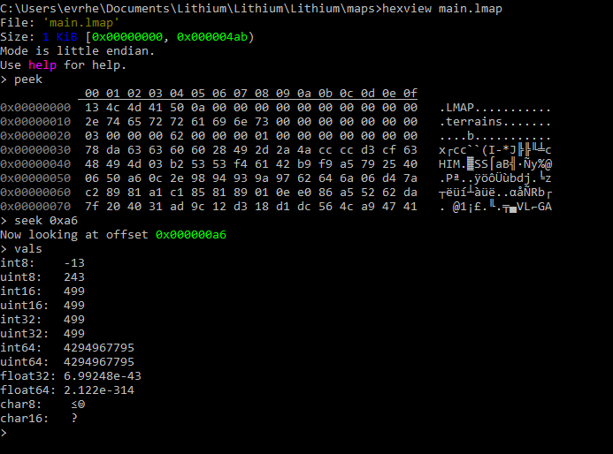

I'm Ethan, a senior at the University of Washington in Seattle, and am majoring in Computer Science.
I'm especially interested in computer graphics, programming languages, and low-level programming constructs.
I plan to graduate in 2024.
I'm Ethan, a senior at the University of Washington in Seattle, and am majoring in Computer Science.
I'm especially interested in computer graphics, programming languages, and low-level programming constructs.
I plan to graduate in 2024.
Lithium is a 3D game engine written in C++ and uses OpenGL for hardware-accelerated rendering.
Uses a deferred rendering pipeline by default and a Physically Based Rendering lighting model
alongside several modern post-processing effects.
Supports authoring C++ scripts to control game behavior, a complex resource system which manages
resources automatically and only loads what is necessary at a single moment.
MatrixUtil is a library written in C++ to handle vector, matrix, and quaternion calculations.
The library uses Intel SIMD Intrinsics for fast computations. Support for ARM Neon is currently
in development.
Example library usage to rotate a point
main.cpp
#include <mutil/mutil.h>
GitHub Repository
lscript is an in-development statically typed scripting language. The language supports both
procedural and object-oriented programming. The source code compiles to a bytecode which is read by the
virtual machine which features many features similar to the Java Virtual Machine. The LScript Virtual
Machine, compiler, and decompiler are all written entirely in C and x86-64 Assembly.
The virtual machine provides features such as a set of library functions for developers to use, as well
as a native interface so developers can write native C or C++ functions and link to an LScript function.
Example lscript class that writes to a file
Main.lasm
using lscript.io
To compile and run:
lsasm Main.lasm
lscript Main.lscriptGitHub Repository
hexview is a cross-platform, command-line binary file viewer. It supports seeking through files
and interpreting groups of bytes as many common data types, such as larger width integers, both
signed and unsigned, floating point numbers, and strings. Utilities are avaliable within the
viewer to make navigating the file easier.
hexview running in Windows command prompt
 GitHub RepositorySome other minor or incomplete projects I may or may not return to in the future.
GitHub: evrhel
LinkedIn: ethan-vrhel
Resume: Resume (Download)
Contact: evrhel(at)cs.washington.edu
© 2023 Ethan Vrhel